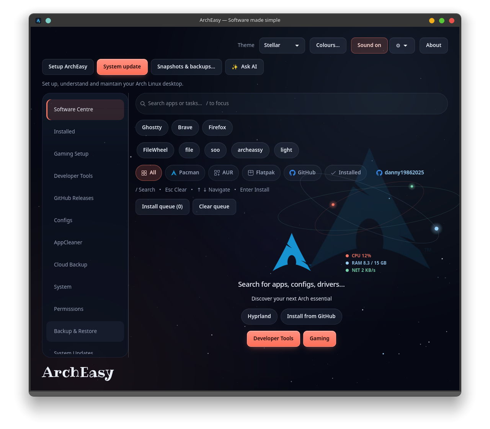

Search Pacman, AUR, Flatpak, and GitHub together from one clean native interface.
Review updates, manage snapshots & encrypted backups, apply config presets, and bootstrap gaming or developer setups.
Paste into your Arch terminal — downloads, verifies SHA-256, extracts & installs launcher automatically.
02 · Multi-Source Store
Four Arch Linux ecosystems, one search bar
Search by package name or plain task keywords like “video editor like Premiere” with zero AI calls.
Queue packages across sources and install in a single transparent terminal.
Pacman Official
Searches locally synced Arch repos and installs via reviewed sudo pacman -Syu --needed.
AUR (paru / yay)
Queries the online AUR RPC API and builds with full PKGBUILD inspection in your terminal.
Flatpak & Flathub
Browses AppStream catalogs and lets you toggle per-user sandbox permissions visually.
GitHub Builds & Releases
Review & build root PKGBUILDs or install SHA-256 verified AppImages and Linux binaries.
Live Task Search Preview
03 · Native GTK4 Interface
Clean, fast, and unmistakably native
Zero Electron bloat. Built in Rust with GTK4 & Libadwaita, animated source gauges, and an always-visible workbench sidebar.

Software Centre — unified Pacman, AUR, Flatpak, and GitHub search with the always-visible workbench sidebar.
Click image to enlarge
04 · Integrated Workbench
One sidebar for your whole Arch desktop
Every module clearly distinguishes read-only diagnostics, reviewed changes, and guided manual recovery—so you stay in control.
System Updates & Health
Reviewed Workflow
05 · Everyday Power
Built for everyday Arch Linux desktops
Clarity for newcomers and full transparency for power users across packages, updates, configs, and cleanup.
Search & Install Queue
Queue packages across multiple searches and install them in order in one interactive terminal.
QueueTask Search
Reviewed System Updates
Pre-flight lock & space checks, fresh checkupdates preview, optional Timeshift/Snapper snapshots, and AUR updates.
SnapshotsLogs
Configs & Timeline Rollback
Dry-run diffs for Fish, Starship, Ghostty, Kitty, Fastfetch, and Hyprland with Fish syntax validation and auto-rollback.
Dry RunAuto Rollback
One-Click Gaming & Dev
Install Steam, Heroic, Lutris, Vulkan 64/32-bit libraries—or Full Stack, Linux App & AI Developer stacks with live logs.
Vulkan + MultilibDev Presets
AppCleaner & Permissions
Scan leftover app folders and move selected paths safely to Trash. Visually toggle per-user Flatpak overrides.
Safe TrashFlatpak Overrides
GitHub Releases & Ask AI
Verify SHA-256/512 checksums on AppImages & binaries. Ask ChatGPT, Gemini, or Claude—suggestions only, never auto-executed.
SHA-256✨ Ask AI
06 · The Arch Way
Beginner-friendly, never a black box
Every privileged action stays visible, reversible where possible, and under your direct confirmation—with full theme customisation.
01 / TRANSPARENT
Real Package Manager Terminals
Installs and upgrades open in your configured terminal with normal password prompts, dependency choices, and AUR PKGBUILD reviews.
02 / SAFE BY DEFAULT
Dry Runs, Backups & Trash
Config presets show exact diffs first and back up existing files automatically. AppCleaner moves leftovers to desktop Trash.
03 / NATIVE & FAST
Rust + GTK4 & Custom Palettes
Zero Electron overhead. Supports System, Light, Dark, Stellar, and custom hex colour palettes with optional click audio.
Try Live Accent Palette
Pick an accent colour to preview ArchEasy’s live theming across this showcase:
07 · Download & Installation
Install ArchEasy, step by step
Use the one-line terminal command for the fastest setup, download the .tar.gz binary or source archive directly, or follow the five-step guide below.
git and base-devel are needed to build from source (options A and C).
3
Choose one way to install
Fastest way: Copy and paste this single command into your Arch Linux terminal. It downloads the v0.1.2 .tar.gz + .sha256, verifies integrity, installs archeasy to ~/.local/bin, and adds the app menu icon:
Click Setup ArchEasy in the top bar. It upgrades your system, installs Flatpak, build tools and Python,
builds paru for AUR support (you review its PKGBUILD first) and adds Flathub. Then search Pacman, AUR,
Flatpak and GitHub together.